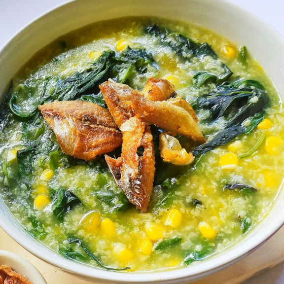

Bubur Manado atau Tinutuan adalah bubur khas Sulawesi Utara yang terkenal dengan rasanya yang gurih dan sehat.
Bubur ini terdiri dari beragam sayuran yang dimasak bersama nasi sehingga menghasilkan cita rasa yang khas.
Bahan Bahan:
- Beras
- Bayam
- Kangkung
- Daun kemangi
- Jagung manis
- Labu kuning
- Singkong
- Kacang panjang
- Bawang merah dan bawang putih
- Garam dan penyedap rasa